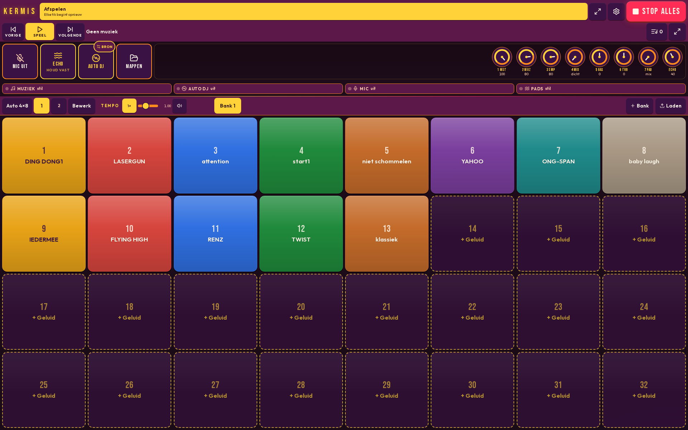
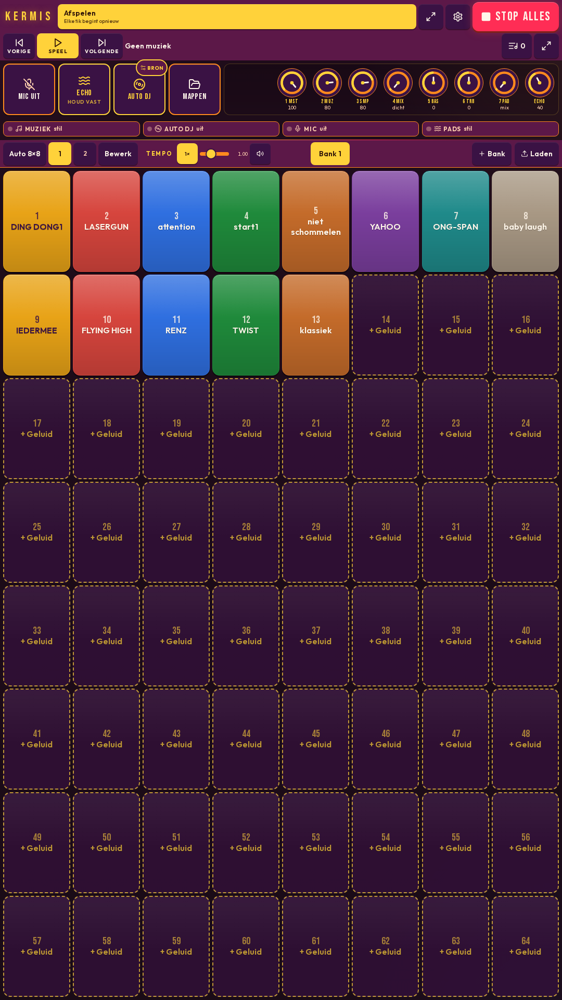

Grote pads
Big pads
Duidelijk en snel, ook met dikke vingers of handschoenen.
Clear and fast, also with thick fingers or gloves.
Soundboard voor de kermis Soundboard for the fairground
Maak thuis je eigen kermis.
Build your own fair at home.

Echte kermisgeluiden op grote pads. Kies het thema Kermis, DJ of Papier, stel de mixer bij en praat er met de microfoon overheen. Bedoeld voor thuis.
Real fairground sounds on big pads. Choose the Kermis, DJ or Papier theme, set the mixer and talk over the sound with the microphone. Made for home.
Duidelijk en snel, ook met dikke vingers of handschoenen.
Clear and fast, also with thick fingers or gloves.
Standaardpads met kermisgeluid, plus ruimte voor je eigen geluiden en banken.
Standard pads with fairground sound, plus room for your own sounds and banks.
Volume, bas en treble bijstellen. Praat eroverheen, met echo, als je de microfoon zelf aanzet.
Adjust volume, bass and treble. Talk over the sound, with echo, when you switch the microphone on.
Laat de app de sfeer doordraaien terwijl jij luistert.
Let the app keep the atmosphere going while you listen.
Geef een pad een naam, kleur en plaatje. Kort een geluid in of laat het herhalen.
Give a pad a name, colour and picture. Trim a sound or let it repeat.
Geen advertenties en geen account. Je indeling blijft op je toestel.
No ads and no account. Your layout stays on your device.
Hetzelfde soundboard, een andere uitstraling.
The same soundboard, a different look.
De vertrouwde donkere kermis.
The familiar dark fairground.
Strak, voor als je zelf draait.
Clean, for when you run the sound yourself.
Licht en rustig.
Light and calm.

Kermis Sampler is een soundboard van Kermis Software voor mensen die thuis de sfeer van de kermis willen: grote pads, duidelijke bediening en echt kermisgeluid.
Kermis Sampler is a soundboard from Kermis Software for people who want the fairground at home: big pads, clear controls and real fairground sound.
Uitgever: Kermis Software (Johan C. Ordelman jr. V.O.F.) · KvK 98595407 · Rotterdam, Nederland.
Publisher: Kermis Software (Johan C. Ordelman jr. V.O.F.) · Chamber of Commerce (KvK) 98595407 · Rotterdam, Netherlands.
Vragen over de app, privacy, de App Store of Google Play? Mail kermissampler@ordelman.net.
Questions about the app, privacy, the App Store or Google Play? Email kermissampler@ordelman.net.